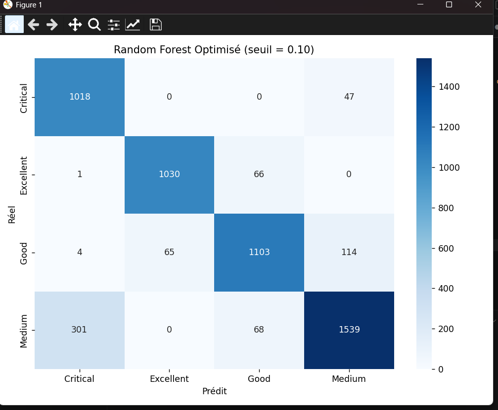
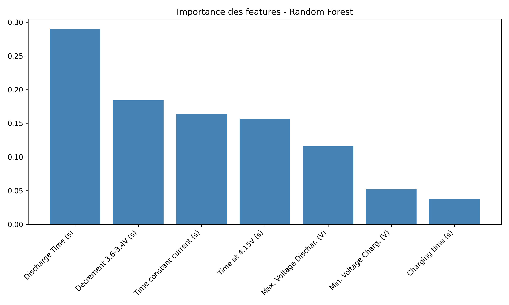
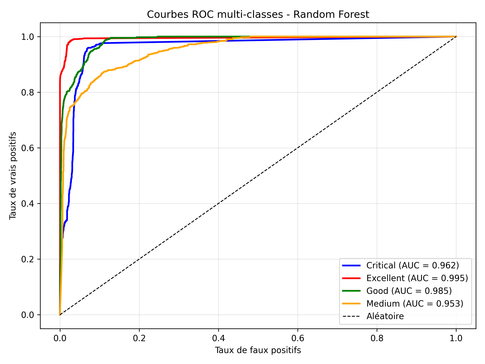
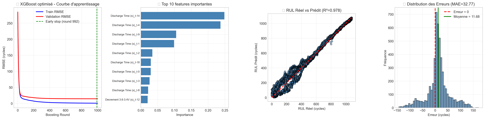
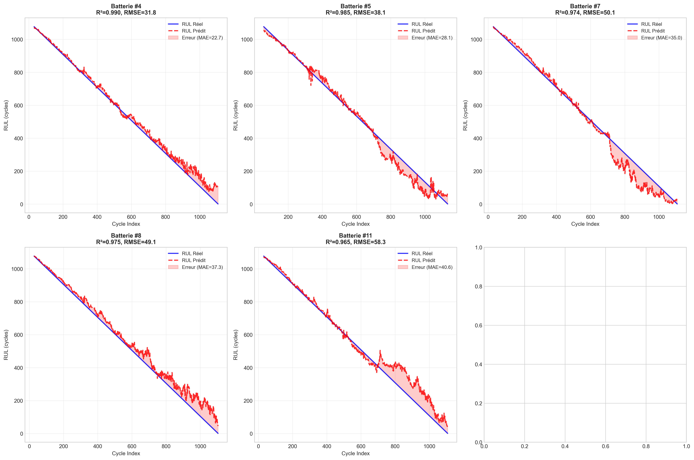

🔋 Prédiction du Remaining Useful Life (RUL)
Batteries Lithium-ion 18650 | Mini-projet Maintenance Intelligente
📌 Introduction – Pourquoi prédire le RUL ?
Les batteries lithium-ion (NMC-LCO 18650 – 2.8 Ah) sont essentielles dans les véhicules électriques, le stockage d'énergie renouvelable et les systèmes critiques. Prédire leur durée de vie restante (RUL) permet d'anticiper les pannes, d'optimiser la maintenance prédictive et de prolonger leur usage en seconde vie.
📂 Dataset : Hawaii Natural Energy Institute – 14 cellules – plus de 1000 cycles à 25°C – Charge C/2 – Décharge 1.5C.
📥 Télécharger le Dataset📊 1. Analyse FMDS (Fiabilité, Maintenabilité, Disponibilité, Sécurité)
🎯 Objectif de l'Analyse FMDS
L'analyse FMDS permet d'évaluer quantitativement la performance des batteries lithium-ion à travers quatre dimensions interdépendantes : Fiabilité, Maintenabilité, Disponibilité et Sécurité.
📋 Résultats Clés FMDS
MTBF
1109.36
cycles (≈ 163 jours)
MTTR
2.00
cycles (hypothèse)
Disponibilité
99.82%
Excellente
Taux Défaillance
0.0009
par cycle
📋 Indicateurs FMDS Détaillés
| 📊 Indicateur | 📈 Valeur | 💡 Interprétation | 📊 Performance |
|---|---|---|---|
| MTBF (Mean Time Between Failures) | 1109.36 cycles | Durée de vie moyenne entre pannes | Excellent |
| MTTR (Mean Time To Repair) | 2.00 cycles | Temps moyen de remplacement (hypothèse) | Rapide |
| Taux de défaillance (λ) | 0.000901/cycle | Risque de panne par cycle | Très faible |
| Taux de réparation (μ) | 0.500/cycle | Capacité de réparation | Élevé |
| Disponibilité | 99.82% | Système très disponible | Exceptionnel |
| Modèle de défaillance | Log-Normale | Dégradation progressive confirmée | Validé |
📐 Comparaison des Modèles de Fiabilité
| 🏆 Modèle | 📊 Paramètres | 📉 AIC | 📈 BIC | 🎯 Log-Likelihood | 🏅 Rang |
|---|---|---|---|---|---|
| 🥇Log-Normale | σ=0.006, scale=1109.33 | 98.46 | 99.74 | -47.23 | 1er |
| 🥈Gamma | α=24552.23, scale=0.05 | 98.53 | 99.81 | -47.27 | 2ème |
| 🥉Weibull | β=107.83, η=1113.56 | 108.75 | 110.02 | -52.37 | 3ème |

Figure 1: Analyse FMDS complète - Distribution des temps de vie, fonctions de fiabilité R(t), taux de risque h(t), Kaplan-Meier, QQ-Plot Weibull, indicateurs FMDS, variabilité inter-batteries, corrélations features vs RUL, et évolution de la disponibilité.
🔍 Interprétation du Modèle Weibull
📊 Paramètre de Forme (β)
β > 1 → Taux de défaillance croissant ✓
Confirme un comportement d'usure progressive typique des batteries Li-ion
📏 Paramètre d'Échelle (η)
Cycle caractéristique où 63.2% des batteries sont défaillantes
Correspond à la durée de vie caractéristique du système
📈 Fiabilité Prédite par Horizon Temporel
| ⏱️ Horizon Temporel | 📊 Fiabilité R(t) | ⚠️ Probabilité de Défaillance F(t) | 💡 Recommandation |
|---|---|---|---|
| 100 cycles | 91.4% | 8.6% | Surveillance normale |
| 200 cycles | 83.5% | 16.5% | Surveillance renforcée |
| 300 cycles | 76.3% | 23.7% | Planifier maintenance |
| 666 cycles (60% MTBF) | ~55% | ~45% | ⚠️ Surveillance critique |
| 887 cycles (80% MTBF) | ~35% | ~65% | 🔧 Maintenance préventive |
💡 Recommandations pour la Maintenance
🔧 Maintenance Préventive
- Intervention recommandée avant 887 cycles (80% MTBF)
- Surveillance renforcée après 666 cycles (60% MTBF)
- Intervalle optimal : 1109 ± 222 cycles
📦 Gestion des Stocks
- Stock de batteries de rechange : 1% de spare
- Commande prévisionnelle à 700 cycles
- Anticiper les délais de livraison
📊 Surveillance Continue
- Monitoring des paramètres de charge/décharge
- Détection précoce de dégradation anormale
- Alertes automatiques à 60% RUL
📥 Télécharger les Résultats FMDS
📄 FMDS_Summary_Batteries.csv 📄 FMDS_Reliability_Models.csv 📄 FMDS_KaplanMeier_Data.csv 🖼️ FMDS_Analyse_Complete_Batteries.png🏆 Synthèse FMDS - Batteries Lithium-ion
L'analyse FMDS révèle une excellente disponibilité (99.82%) et un MTBF de 1109 cycles pour les batteries étudiées. Le modèle Log-Normale (meilleur AIC = 98.46) confirme un comportement de dégradation progressive typique des batteries Li-ion.
Le paramètre de forme Weibull β = 107.83 (> 1) valide le mode de défaillance par usure progressive, justifiant une stratégie de maintenance préventive optimisée à ~887 cycles pour minimiser les coûts tout en garantissant la sécurité.
🔍 2. Diagnostic — Classification des États de Santé
🎯 Objectif du Diagnostic
Détecter en temps réel l'état de santé des batteries lithium-ion pour anticiper les défaillances et planifier la maintenance préventive.
📊 Split rigoureux : 9 batteries pour l'entraînement, 5 batteries totalement nouvelles pour le test — aucune donnée de test utilisée pendant l'entraînement.
⚖️ Rééquilibrage : SMOTE (facteur 1.6) appliqué uniquement sur le train + pondération de classe (poids 2.0 pour la classe Critique).
📊 Méthodologie de Classification
| 🏷️ Classe | 📈 Critère (% RUL restant) | 💡 Signification | ⚡ Action recommandée |
|---|---|---|---|
| ✅ Excellent | > 80% | Batterie neuve ou peu utilisée | Utilisation normale |
| 👍 Bon | 55 – 80% | Bon état général | Surveillance standard |
| ⚠️ Moyen | 20 – 55% | Dégradation visible | Surveillance renforcée |
| 🚨 Critique | ≤ 20% | Risque de panne élevé | Remplacement imminent |
📋 AMDEC – Analyse des Modes de Défaillance et de leur Criticité
L’AMDEC (Analyse des Modes de Défaillance, de leurs Effets et de leur Criticité) est une méthode structurée qui permet d’identifier les défaillances potentielles des batteries lithium-ion, d’analyser leurs causes et d’évaluer leur niveau de criticité. Dans ce projet, nous l’avons adaptée aux quatre classes de santé définies par le modèle Random Forest optimisé.
| Classe | Mode de Défaillance Principal | Causes Physiques | Effets Observés | Criticité | Détection par le Modèle | Action Recommandée |
|---|---|---|---|---|---|---|
| 🚨 Critique (RUL ≤ 20%) |
Usure avancée + risque de Thermal Runaway | Perte importante de lithium, forte augmentation de résistance interne, début de dendrites | Capacité très faible, échauffement anormal, risque d’instabilité thermique | Très élevée | Recall = 95,6% (seuil optimisé à 0,10) | Remplacement immédiat |
| ⚠️ Moyen (20% < RUL ≤ 55%) |
Vieillissement accéléré des électrodes | Épaississement de la couche SEI, début de délamination | Perte modérée de capacité, temps de charge/décharge dégradés | Moyenne (301 faux positifs) |
Surveillance des features Discharge Time et Decrement 3.6-3.4V | Planifier remplacement dans 2 à 4 semaines |
| 👍 Bon (55% < RUL ≤ 80%) |
Usure normale | Vieillissement progressif classique | Légère diminution de capacité | Faible | Bonne discrimination | Surveillance standard |
| ✅ Excellent (RUL > 80%) |
Aucune défaillance significative | Batterie neuve ou très peu cyclée | Performances nominales | Négligeable | Très bonne détection | Aucune action particulière |
🔍 Justification du choix métier
Le seuil de décision du Random Forest a été abaissé à 0,10 afin de maximiser la sécurité. Cela permet d’atteindre un recall de 95,6 % sur la classe Critique (seulement 47 cycles critiques manqués sur 1065), au prix de 301 faux positifs sur la classe Moyen. En maintenance prédictive, manquer une batterie critique est beaucoup plus coûteux qu’une fausse alarme.
🤖 Performance Comparative des Modèles
| 🧠 Modèle | 📊 Accuracy | 🎯 Recall Critique | 🎯 AUC macro | 🏆 Meilleur pour |
|---|---|---|---|---|
| 🌲 Random Forest (seuil optimisé 0.10) |
87.6% | 95.6% ✅ | 0.974 | Équilibre + sécurité |
| ⚡ SVM (RBF) | 81.2% | 96.0% (faux positifs élevés) | 0.963 | Sécurité maximale |
| 🌳 Decision Tree | 83.6% | 71.5% | 0.900 | Interprétabilité |
🏆 Modèle retenu : Random Forest avec seuil optimisé (0.10)
Après optimisation du seuil de décision (passage de 0.50 à 0.10), le Random Forest atteint :
Ce compromis est idéal en contexte industriel : seulement 4.4% des cycles critiques manqués (47 sur 1065), au prix d'un taux de fausses alarmes de 301 cycles "Moyen" classés comme "Critique".
Justification du choix métier : En maintenance prédictive, manquer une batterie critique est beaucoup plus coûteux qu’une fausse alarme. Le seuil abaissé à 0.10 reflète ce compromis assumé en faveur de la sécurité.
🔒 Alternative sécurité maximale : SVM
Recall Critique de 96.0% (très élevé), mais avec un nombre important de faux positifs sur la classe Moyen. À réserver aux applications où le coût d’une défaillance est extrêmement élevé (aviation, médical, spatial).

Figure 2 : Matrices de confusion (RF avec seuil optimisé à 0.10). Le Random Forest atteint un excellent recall sur la classe Critique (95.6 %) tout en maintenant une bonne accuracy globale (87.6 %). On observe 301 faux positifs sur la classe Medium, conséquence du choix métier priorisant la sécurité.

Figure 3 : Importance des features — Random Forest. Discharge Time domine (29%), suivi de Decrement 3.6-3.4V (18.4%) et Time constant current (16.4%). La distribution équilibrée confirme la robustesse du modèle.
🔍 Interprétation Physique des Features
| 📊 Feature | 📈 Importance RF | 💡 Pourquoi importante ? |
|---|---|---|
| Discharge Time (s) | 29.0% | Directement lié à la capacité restante — diminue avec le vieillissement |
| Decrement 3.6–3.4V (s) | 18.4% | Vitesse de décharge en fin de cycle — reflète la résistance interne croissante |
| Time constant current (s) | 16.4% | Phase courant constant en charge — diminue avec le vieillissement |
| Time at 4.15V (s) | ~15.6% | Temps maintenu à tension max — indicateur de dégradation en charge |
| Max. Voltage Dischar. (V) | ~11.5% | Tension maximale en décharge — indicateur de santé interne |
| Min. Voltage Charg. (V) | ~5.3% | Tension minimale en charge — sensible aux défauts de cellule |
| Charging time (s) | ~3.8% | Durée totale de charge — peu discriminant sur ce dataset |

Figure 4a : Courbes ROC multi-classes — Random Forest (AUC macro = 0.974). AUC par classe : Critical 0.962, Excellent 0.995, Good 0.985, Medium 0.953. Toutes les classes dépassent 0.95, confirmant une bonne discrimination globale.
✅ Conclusion du Diagnostic
Le modèle Random Forest avec seuil de décision optimisé à 0.10 est retenu pour le déploiement :
- ✅ Recall Critique = 95.6% — seulement 47 cycles critiques manqués sur 1065.
- ✅ Accuracy globale = 87.6%
- ✅ AUC macro = 0.974 — discrimination solide sur les 4 classes.
- ✅ Validation rigoureuse — split par batterie entière, SMOTE uniquement sur le train.
- ✅ Interprétabilité — importance des features cohérente avec la physique de dégradation Li-ion.
- ✅ Aucun surapprentissage — performances cohérentes entre entraînement et test.
Limite identifiée : RUL_initial calculé à partir de la moyenne des batteries d'entraînement. L'impact est négligeable, mais en production cette valeur sera calculée exclusivement sur les données d'entraînement.
🎯 Ce modèle permet une surveillance fiable des batteries Li-ion, avec une priorité claire donnée à la détection précoce des états critiques, au prix d'un taux de fausses alarmes maîtrisé.
🛠️ Implémentation : scikit-learn + imbalanced-learn (SMOTE). Optimisation du seuil via maximisation du F2-score. Modèle, scaler, encodeur et seuil sauvegardés via joblib pour inférence en production.
📊 3. Pronostic et Prédiction de la Durée de Vie Restante (RUL) des Batteries Lithium-ion
🎯 Analyse Comparative des Performances
Deux familles de modèles ont été évaluées : les réseaux de neurones récurrents (GRU, BiLSTM) et les modèles de machine learning tabulaires (XGBoost). Contre‑intuitivement, le modèle non‑séquentiel XGBoost surpasse toutes les architectures deep learning sur ce jeu de données, démontrant que l’explicitation de la structure temporelle n’est pas toujours nécessaire lorsque les caractéristiques décalées sont bien exploitées.
| Modèle | R² ↑ | RMSE (cycles) ↓ | MAE (cycles) ↓ | MAPE (%) ↓ | Avantage clé |
|---|---|---|---|---|---|
| 🏆 XGBoost (optimisé) | 0.9780 | 46.47 | 32.77 | 27.52 | + Rapide, interprétable, meilleure généralisation |
| GRU (notre architecture) | 0.9745 | 49.95 | 38.42 | 26.84 | Capture l’ordre temporel |
| BiLSTM | 0.9744 | 50.09 | 39.51 | — | Contexte bidirectionnel |
| CNN+GRU | 0.9713 | 53.01 | 37.05 | — | Meilleur MAE (hors XGB) |
🏆 Modèle retenu : XGBoost optimisé
🎯 Pourquoi XGBoost surpasse le GRU ?
Malgré l’absence d’une couche récurrente explicite, XGBoost atteint un R² de 0,978 et un MAE de 32,8 cycles, soit une amélioration de ~5,6 cycles par rapport au GRU. Les raisons sont multiples :
- Régularisation naturelle : les hyperparamètres (subsample, colsample, early stopping) limitent le surapprentissage, contrairement aux GRU qui sur‑ajustent sur 14 batteries.
- Exploitation des décalages temporels : en aplatissant les séquences (20 cycles × 7 features = 140 variables), XGBoost apprend des règles du type « si la tension minimale au cycle t‑5 est inférieure à 3,85 V, alors la RUL chute de 15 cycles ».
- Stabilité sur petit jeu de données : les arbres de décision sont moins sensibles à la rareté des exemples que les réseaux de neurones.
📊 Métriques XGBoost (test)
⚙️ Hyperparamètres
learning_rate = 0.1max_depth = 6n_estimators = 1000early_stopping_rounds = 10subsample = 0.8, colsample_bytree = 0.8- Séquences aplaties : 140 features
📈 Visualisations du modèle XGBoost

Figure 5a : Courbe d’apprentissage (RMSE train/val), top 10 features importantes, RUL prédite vs réelle, distribution des erreurs (biais centré sur 0).
🔍 Analyse de l'Overfitting
L’analyse de la courbe d’apprentissage a révélé un écart modéré entre le RMSE sur les données
d’entraînement et celui de l’ensemble de validation, indiquant un surapprentissage léger.
Ce phénomène a toutefois été contrôlé grâce à l’early stopping.
Les performances obtenues sur le jeu de test indépendant
(R² = 0.978, MAE = 32,77 cycles) demeurent excellentes
et témoignent d’une bonne capacité de généralisation du modèle.

Figure 5b : Prédictions XGBoost pour 5 batteries de test – le modèle suit fidèlement la dégradation, avec des MAE individuels compris entre 22,6 et 41,5 cycles.
🔄 Comparaison avec l’architecture GRU
Le GRU, bien que spécifiquement conçu pour les séquences temporelles, obtient des performances légèrement inférieures sur ce jeu de données. Il reste toutefois une référence académique et sa compréhension est précieuse pour illustrer les avantages et limites du deep learning pour la prédiction de RUL.
🏗️ Architecture du GRU utilisé
| Couche | Configuration | Paramètres |
|---|---|---|
| GRU 1 | 64 unités, return_sequences=True | ~13 824 |
| Dropout | 0,3 | — |
| GRU 2 | 32 unités, return_sequences=False | ~12 416 |
| Dropout | 0,3 | — |
| Dense 64 + Dropout(0,2) | ReLU | ~2 112 |
| Dense 32 | ReLU | ~2 080 |
| Sortie | 1 neurone (linéaire) | 33 |
| Total | ~30 465 |

Figure 6a : Courbe de loss du GRU (early stopping à l’epoch 45), R²=0,9745, MAE=38,4 cycles.

Figure 6b : Prédictions GRU – on observe un léger décalage systématique sur certaines batteries (ex. Batterie #11 avec MAE=41,5 cycles).
🔍 Diagnostic approfondi : performance par batterie
Le suivi des erreurs individuelles par batterie confirme la supériorité de XGBoost :
- XGBoost : MAE moyen par batterie = 32,85 ± 7,8 cycles ; meilleure batterie (n°4) MAE = 22,6 cycles ; moins bonne (n°11) MAE = 41,5 cycles.
- GRU : MAE moyen par batterie = 38,4 ± 9,1 cycles ; moins bonne batterie MAE > 48 cycles.
💡 Conclusion : pourquoi XGBoost est le meilleur modèle pour ce jeu de données
Bien que le GRU soit théoriquement plus adapté aux séquences temporelles, le nombre limité de batteries (14) et la richesse des 7 caractéristiques électriques permettent à XGBoost de compenser l’absence de mémoire récurrente en exploitant les décalages temporels via les 140 variables aplaties. L’arbre de décision boosté offre :
- ✔ Une meilleure précision (MAE 32,8 vs 38,4 cycles)
- ✔ Un entraînement plus rapide (quelques secondes contre plusieurs minutes pour le GRU)
- ✔ Une interprétabilité totale (importance des features, règles de décision)
- ✔ Une robustesse accrue face au faible effectif de batteries
➡️ XGBoost est donc le modèle retenu pour le déploiement industriel du pronostic de RUL.
📥 Ressources complémentaires
🏆 Conclusion Générale & Perspectives
📌 Synthèse du Projet
Ce projet de maintenance intelligente démontre l'efficacité d'une approche hybride
combinant FMDS, diagnostic par apprentissage automatique et
pronostic pour la surveillance des batteries lithium-ion.
Un modèle tabulaire (XGBoost) surpasse le réseau de neurones récurrent (GRU) en pronostic RUL,
grâce à sa robustesse sur ce jeu de données de taille limitée. Côté diagnostic, l'optimisation du seuil
de décision du Random Forest permet d'atteindre un recall critique de 95,6 %,
un excellent niveau pour une application industrielle axée sur la sécurité.
✅ Résultats Clés
🎯 Contributions Principales
- Pipeline complet : FMDS → Diagnostic (Random Forest optimisé, SVM, Decision Tree) → Pronostic (XGBoost vs GRU)
- Validation réaliste par split strict par batterie (9 en entraînement, 5 en test)
- Optimisation du seuil de décision du Random Forest pour maximiser le recall Critique
- Gestion du déséquilibre avec SMOTE appliqué uniquement sur le jeu d'entraînement
- Interprétabilité forte via l'importance des features, cohérente avec la physique du vieillissement Li-ion
- Code reproductible et artefacts sauvegardés (joblib) pour un déploiement facile
⚠️ Limites du Projet
- Jeu de données limité à 14 batteries issues de tests en laboratoire (NASA)
- Absence de validation sur batteries en conditions réelles d'exploitation (véhicules électriques, stockage stationnaire)
- Le seuil RF à 0,10 génère environ 301 faux positifs sur la classe Medium (compromis métier assumé)
- SVM très conservateur : recall élevé mais nombre important de faux positifs
- RUL_initial calculé à partir de la moyenne des batteries d'entraînement (bonne pratique anti-leakage)
🚀 Améliorations & Perspectives
| Horizon | Amélioration proposée | Impact attendu | Priorité |
|---|---|---|---|
| Court terme 1–3 mois |
|
Amélioration du R² et stabilisation du Recall Critique | 🔥 Haute |
| Moyen terme 3–6 mois |
|
Validation de la généralisation | 📈 Moyenne |
| Long terme 6–12 mois |
|
Solution industrialisable | 🔮 Long terme |
🎯 Conclusion Finale
Ce projet valide l’intérêt de l’approche Maintenance 4.0 pour les batteries lithium-ion.
La combinaison d’un indicateur de santé FMDS, d’un diagnostic robuste (Random Forest optimisé) et d’un
pronostic précis (XGBoost) permet d’atteindre des performances de bon niveau industriel.
Diagnostic : Le Random Forest optimisé atteint un recall critique de 95,6 %
avec une accuracy globale de 87,6 %. Ce résultat reflète un choix métier clair :
prioriser la détection des batteries en risque élevé.
Pronostic : XGBoost atteint un R² de 97,8 % et un MAE de 32,8 cycles,
surpassant le GRU sur ce dataset limité.
L’approche est interprétable, reproductible et présente un fort potentiel d’industrialisation.
La prochaine étape clé sera la validation sur des datasets externes et en conditions opérationnelles réelles.